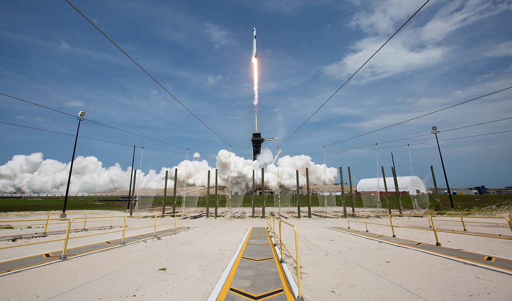

Il registro è successivo all’ultima revisione editoriale. Le serie sono state ricalcolate; l’interpretazione richiede un nuovo controllo.
La tesi
Il riutilizzo ha cambiato la scala industriale dei Falcon. Ma la cadenza nasce dall'incontro fra un mezzo disponibile, una domanda di voli e un'organizzazione capace di sostenerli. Contare i decolli non basta per isolare il contributo di ciascuno, e soprattutto non basta per ricostruire il costo o il margine di un lancio.
Tre curve, non una spiegazione unica
La storia di SpaceX dopo il 2017 non è soltanto una ripresa. È il passaggio a una scala diversa. Nel registro del sito, i Falcon passano da 18 decolli nel 2017 a 165 nel 2025: un rapporto di 9,17 a uno. Il dato colpisce, ma va letto interamente. Nel 2019 i decolli sono meno che nel 2018. La crescita non è una salita senza interruzioni e una capacità tecnica non si trasforma, da sola, in un ordine del cliente.
La prima scelta di questa analisi è quindi confrontare anni interi, con la stessa unità: un decollo di missione. Falcon 1, Falcon 9 e Falcon Heavy appartengono al perimetro Falcon; le prove Starship restano fuori. AMOS-6 non aggiunge un lancio al 2016, perché il razzo fu perduto prima di decollare. Tre core di un Falcon Heavy non diventano tre missioni. Le definizioni non sono una nota secondaria: decidono la forma della curva.

La separazione fra missioni classificate Starlink e altre missioni permette una domanda più interessante del semplice totale. Nel 2025, 122 dei 165 decolli Falcon del registro sono Starlink, cioè il 73,9%. È una quota dei lanci, non della massa trasportata, degli abbonamenti o dei ricavi. La categoria «altre missioni» non significa automaticamente «clienti esterni»: comprende impieghi differenti, e una parte può avere obiettivi o finanziamenti non ricostruibili dal nome del carico.
La lettura proposta è che SpaceX abbia combinato disponibilità del lanciatore e una domanda interna ripetuta. È un'interpretazione industriale compatibile con i dati, non una dimostrazione causale. La stessa organizzazione costruisce la rete e ne organizza il trasporto; questo può ridurre l'incertezza del manifesto di volo e consentire campagne frequenti. Ma dalla serie non sappiamo quanti slot Starlink abbiano riempito vuoti, quanti clienti siano stati spostati, quali vincoli di fabbrica o di range siano stati decisivi.

Il razzo torna. Poi bisogna farlo ripartire
Un atterraggio apre una possibilità. Un secondo volo dimostra che quella possibilità è stata usata. Sono fatti diversi. Per misurare il riutilizzo qui si contano i voli dei booster con progressivo superiore a uno. Il denominatore è il numero dei voli dei booster, non quello delle missioni. È per questo che, negli anni in cui vola Falcon Heavy, le due colonne non coincidono.

Nel 2017 il registro documenta 5 rivoli su 18 voli di booster. Nel 2025 sono 157 su 165, il 95,2%. La differenza indica che il riuso non è più una dimostrazione occasionale nella composizione di questi voli: ne costituisce la parte dominante. Non significa che tutti gli stadi siano stati conservati, che il costo del ricondizionamento sia trascurabile o che ogni esemplare abbia raggiunto la stessa vita utile.
Block 5 affrontò esplicitamente affidabilità, durata e ricondizionamento. La guida Falcon, §2.1 e §8.4, descrive quegli obiettivi e le strutture di lavoro, ma non pubblica un conto economico completo per ciascun booster. Il numero dei rivoli osservati è dunque una prova dell'impiego ripetuto, non il sostituto di un bilancio industriale.
C'è anche un problema di selezione del campione. Gli esemplari che sopravvivono e trovano nuove missioni accumulano voli; quelli perduti, ritirati o non più assegnati scompaiono dalla corsa ai record. Prendere soltanto il booster più longevo e attribuirne la vita a tutta la flotta sarebbe sbagliato. Un'analisi delle vite complete richiederebbe conoscere anche ritiri, modifiche, cause delle perdite e stadi ancora in servizio, per i quali l'osservazione non è terminata.
Un calcolo in più, con il suo limite
Nel 2025: 38,0 giorni di intervallo mediano fra voli consecutivi documentati della stessa matricola. Coppie utilizzabili: 157; rivoli del registro: 157; rivoli senza coppia consecutiva utilizzabile: 0. Tutte le coppie e gli identificatori. Non è il tempo di ricondizionamento.
L'intervallo fra due decolli dello stesso booster aggiunge un'informazione, ma non misura il tempo passato in officina. Dentro quell'intervallo ci sono trasporto, ispezioni, lavori, disponibilità del pad, meteo, range e attesa di una missione. Il nostro calcolo usa date del calendario, non un cronometro di ricondizionamento. Le coppie vengono incluse soltanto quando matricola e progressivi consecutivi consentono il collegamento; i casi esclusi sono dichiarati. Per confrontare le officine servirebbero dati che questo registro non contiene.
Il vantaggio economico, senza inventare il prezzo
La logica del riutilizzo è forte: costruire un oggetto costoso una volta e farlo lavorare più volte. Ma il risparmio dipende anche da quanto costa ogni ritorno, da ciò che resta consumabile e dalla frequenza con cui l'investimento viene effettivamente utilizzato. Recuperare un primo stadio non recupera automaticamente il secondo; né cancella le attività di terra, il personale, la manutenzione, l'integrazione del carico o il capitale immobilizzato.

Il modello è deliberatamente piccolo. Indica con C il costo iniziale dello stadio, con R il ricondizionamento fra due voli e con A tutti gli altri costi per volo. Se lo stadio compie n voli e il costo del ricondizionamento resta uguale ogni volta, la media è C/n + R(n−1)/n + A. Non è una stima dei costi SpaceX. I numeri sono unità convenzionali, non dollari o milioni, e non vengono adattati ai prezzi commerciali del Falcon.
Nel modello, aumentando n si distribuisce C su più missioni, ma restano R e A. Inoltre il vantaggio rispetto a uno stadio consumato a ogni volo non nasce dal numero di riusi soltanto: se R fosse maggiore di C, riutilizzare diventerebbe più costoso nelle ipotesi adottate. È un caso limite utile per vedere ciò che la formula dice davvero. Nella realtà andrebbero aggiunti sviluppo, probabilità di perdita, lavori non uniformi e possibili differenze di capacità e prezzo fra traiettorie con e senza recupero.
È qui che molte discussioni saltano un passaggio. Un prezzo di listino non è il costo marginale; il costo marginale non è il costo medio; un costo medio più basso non rivela da solo il margine, perché possono cambiare prezzo, mix di missioni e investimenti. Il dossier non attribuisce al Falcon un valore in dollari ottenuto dividendo il prezzo annunciato per il numero dei voli di un booster.
Che cosa possiamo concludere
I dati sostengono due affermazioni circoscritte: la scala dei decolli Falcon è cresciuta molto rispetto al 2017 e, nei voli più recenti del periodo chiuso, i booster già volati sono prevalenti. La forte presenza di Starlink collega il trasporto allo sviluppo di una rete, ma non dimostra quale sarebbe stata la cadenza senza quella domanda. Il controfattuale richiederebbe un metodo e informazioni aggiuntive, non una linea estrapolata dal grafico.
| Anno | Intervallo incluso | Decolli Falcon | Voli booster | Rivoli documentati |
|---|---|---|---|---|
| 2025 | 2025-01-01 / 2025-10-31 | 139 | 139 | 132 |
| 2026 | 2026-01-01 / 2026-10-31 | 121 | 127 | 121 |
Per l'anno aperto mostriamo un confronto alla stessa data del calendario nei due anni, senza proiettare il ritmo sui mesi mancanti. Non è una previsione: stagionalità, campagne concentrate e fermi possono modificare il risultato finale. Neppure una quota di successi generali del lanciatore autorizza a inventare l'esito separato di ogni carico. La disponibilità dei campi è riportata nei dati di calcolo, compresi gli esiti del carico e i recuperi fisici non documentati separatamente.
Il beneficio industriale del riuso può convivere con altri costi: rumore, infrastrutture, consumo di risorse, gestione delle aree di lancio e rientri. Non li monetizziamo senza una base adeguata. Separare il conto dell'azienda dal conto delle comunità evita sia il tifo sia l'errore opposto, quello di ignorare un cambiamento tecnico perché non risolve ogni problema. Il dossier sulle megacostellazioni segue proprio questo passaggio dalla capacità di lanciare all'obbligo di sostenere il sistema.
Domande che restano aperte
Quanto lavoro richiede davvero ogni rivolo? Quale parte del capitale è immobilizzata nella flotta? Come cambiano disponibilità e costo quando si aggiunge un pad? Quanto del vantaggio viene trasferito ai clienti e quanto sostiene altri investimenti? Il registro non risponde a queste domande e non viene forzato a farlo. Offre invece un punto di partenza controllabile: missioni identificabili, unità distinte e calcoli che il lettore può rifare.
Consulta le missioni Falcon · Architettura Falcon Heavy · La svolta del 2017 nella storia.
Fonti, date e ruolo dei documenti
- Archivio pubblico di Rivoluzione Spaziale. Dataset editoriale riconciliato. Documento: 2026-10-10; controllo: 2026-10-12. dati.json, schemaVersion 1; registro missioni e voli dei veicoli. Deriva dai workbook del sito, con confronto Wikipedia documentato. Non è un dataset ufficiale SpaceX né una verifica primaria indipendente di ogni riga. La copia di calcolo e le impronte sono pubbliche.
- SpaceX, Falcon User's Guide, versione 8. Costruttore. Documento: 2025-03; controllo: 2026-10-12. §2.1, pp. 6–7; §8.4, p. 68. Architettura Falcon Heavy, Block 5 e ricondizionamento; non bilancio certificato del costo di un singolo lancio.
- Starlink, Progress Report 2025. Operatore. Documento: 2025; controllo: 2026-10-12. Rapporto annuale, non contatore corrente. Documento aziendale per confrontare interpretazioni e contesto del servizio; le serie numeriche di questo dossier provengono dal registro, non da un incrocio di totali pubblicitari.
I calcoli del registro sono un'elaborazione originale del sito; le interpretazioni sono editoriali. I modelli didattici non sono dati osservati.
Rifare i calcoli
Risultati, formule e identificatori JSON · Copia esatta del registro usato · Codice del generatore · Codice dei modelli.
Impronta SHA-256 della copia del registro: 4d0fa657bd254af140d593fb1f1b028fed13c5baa55571b934408e776d4b668c. Istruzioni e limiti.